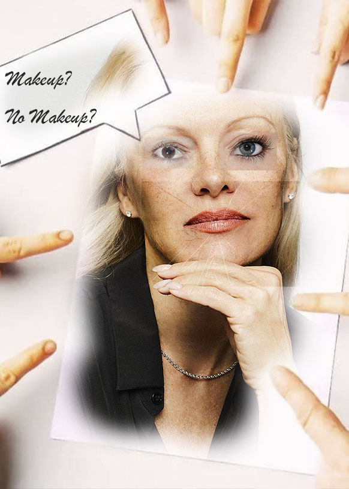
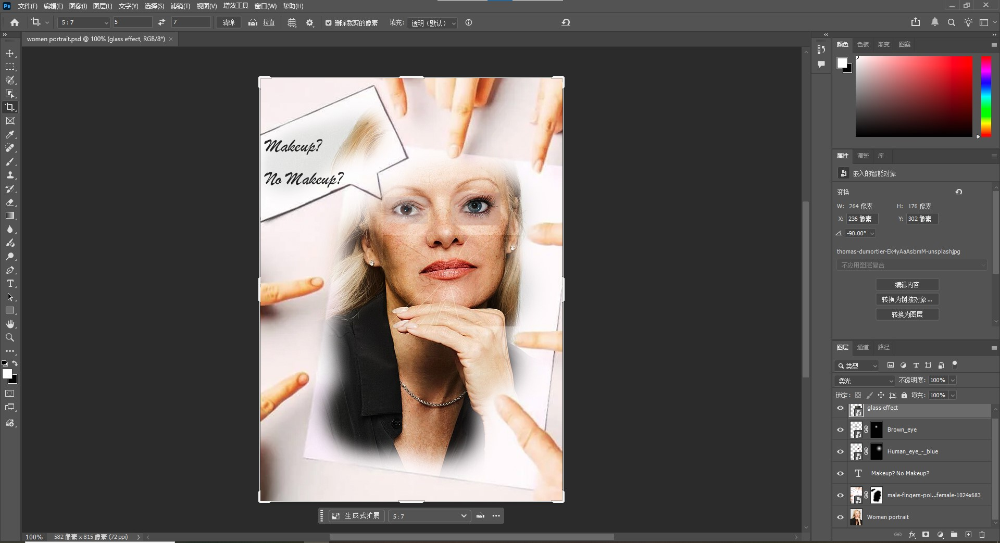

This photomontage looks at the social pressure placed on women about beauty standards, especially the constant discussion about makeup. The central figure stands in the middle and many fingers point at her. These fingers show judgment and close attention from society. The text “Makeup? No Makeup?” shows a difficult double standard. People criticize women when they wear makeup, and people also criticize them when they do not.
The piece uses five layers. I used most of the layer from wikipedia commons and some from Unspalsh. The layers include a woman’s portrait, hands with pointing fingers, close-up images of eyes, a cracked glass texture, and a text element. I used Layer Masks to blend the edges of the images so the images connect more smoothly. I also used the Multiply blending mode on the cracked glass texture so it could sit on top of the portrait. Go back to homepage